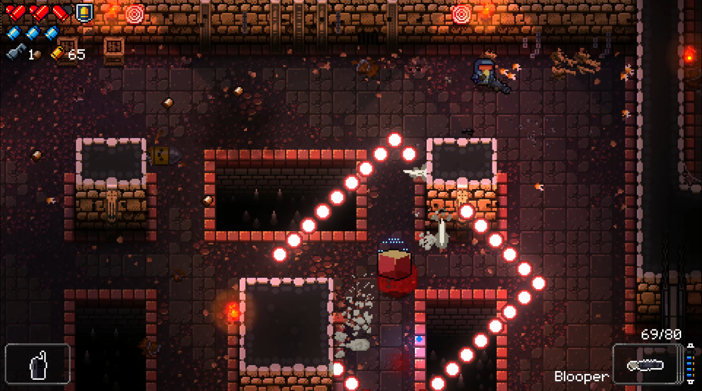
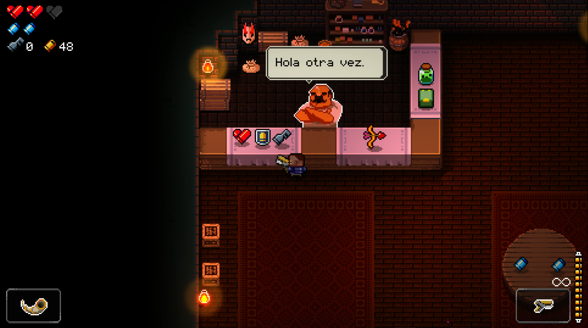
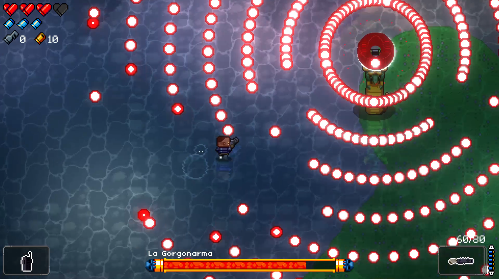

Procesador: Intel Core 2 Duo E6320 (2*1866) o equivalente.
Ram: 2GB.
Video: GeForce 7600 GS(512MB) o equivalente.
Disco: 2GB Libres.
Sinopsis
“Por toda la galaxia se cuenta una leyenda. En un planeta lejano se alzaba una lóbrega fortaleza ... hasta que una fuerza letal dividió los cielos y descendió sobre el bastion. Aunque reducido a ruinas, las cenizas de aquel lugar contienen un artefacto de un poder imposible. Un arma que puede matar el pasado. Con el tiempo, la fortaleza se reconstruyó, y algunos de quienes oían la leyenda lo arriesga todo por tener otra oportunidad. Para reclamar su premio y deshacer lo hecho deben…”
...Debemos evitar a toda costa que nos revienten a balazos!
Puesto que es de lo que va este excelente juego, de dominar la armazmorra a base de evitar los disparos de nuestros enemigos, de los cuales habrá variados y tendrán comportamientos totalmente diferentes a la hora de atacarnos, ya sean ataques frenéticos con ametralladoras o de soporte para hacerlos más resistentes a nuestras balas.
Para combatir contra estos vamos a contar con cuatro personajes, los cuales tendrán habilidades únicas que harán distinta la experiencia del juego en cada partida, y lo será, ya que para colmo el juego cuenta con un sistema de generación procedural de cada zona, haciendo que ningún mapa sea igual al anterior.

El entorno nos dara ventaja en ciertas situaciones.
Cada sala viene totalmente amoblada para que podamos tirar abajo su decorado, pero no te ilusiones esperando a que cada objeto que rompas te de algo a cambio, aunque por si acaso los rompemos igual. No todos los mobiliarios son totalmente inútiles, ya que tendremos a nuestra disposición objetos que podrán salvarnos más de una vez, como mesas o barriles explosivos.
Los que si nos dejan objetos son algunos de los enemigos abatidos, pudiendo dropear desde cartuchos de vida, llaves para cofres o celdas, hasta “Monedas”, etc. ¿Por qué destacamos monedas?, por el motivo de que son casquillos de munición, pero dentro del juego se los utiliza como forma de comercio con el tendero.

Hora de gastar los ahorros.
Este nos venderá todo lo necesario para que el armazmorrista de turno se le haga más fácil la estadía, aunque en un principio no hay un gran catálogo, con el tiempo podremos conseguir por medio de “Créditos de La Hegemonía” desbloquear nuevas piezas para que nos las vendan en nuestras partidas.
Ahora, el cómo conseguimos los “Créditos” es otro tema, ya que deberemos primero hacernos cargo del Jefe de Zona, y, para doblegar a estas bestias va a ser necesario estar bien familiarizado con la mecánica básica de la “Voltereta” y contar con algunas municiones de Fogueo para evitar la balacera que te espera.

La clave es aprender su patron de ataque.
No siempre va a ser Fogueo y Voltereta, para hacer frente a los jefes y a otros enemigos sin caer en plena batalla, va a ser necesario ir bien armado siendo este un gran punto del juego, ya que cuenta con un amplio repertorio de armas para comprar y desbloquear. Por más habilidad que se tenga hay ocaciones que se necesitará un gran calibre como amigo.
Y como compañía no solamente tendremos a los cuatro personajes principales y nuestra arma, sino que en el camino también podremos liberar prisioneros. Estos una vez libres podrán interactuar con nosotros en la “Brecha” dándonos nuevos diálogos y opciones para hacer. Así que por esta razón es muy importante recorrer toda la Zona y descubrir todos los secretos que esta guarda.
No tiene un modo Online, pero si contamos con un modo cooperativo bastante entretenido si tenemos a algún amigo que nos ayude un poco. Lo único engorroso es que al ser dos en una pantalla al momento de alejarse uno del otro se pierde un poco la visión de lo que hay más allá y pueden llegarnos disparos sin saber que había alguien ahí; cuestión de acostumbrarse. Algo a destacar es que nuestro acompañante solo podrá usar a “El Cultor” como personaje principal.
Conclusion Final
Es un juego muy entretenido, pero si no dominas bien las mecánicas básicas te la vas a pasar repitiendo las primeras zonas, así que si lo de esquivar disparos como loco no es lo tuyo ni lo pruebes. Ten en cuenta que al ser un Rogue-Like, cuenta con muerte permanente, haciendo que pierdas todo el progreso que hayas conseguido y tengas que iniciar de nuevo desde la primera zona.
Los diseños de personajes ,enemigos, salas, etc, estan muy bien logrados y te sentiras a gusto si te agrada el pixelart. Una banda sonora que acompaña al juego dándole mucha vida y frenetismo a cada sala.
Lo mejor es que no pide una pasada de maquina y al momento de probarlo no demostró tener ningun Bug importante, así que si tienes pensado comprarlo haces bien.